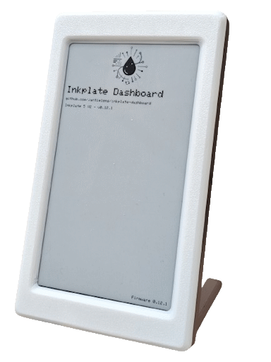
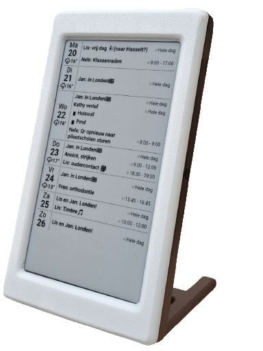

🎯 Select Your Device
ℹ️ Before you start:
Make sure your Inkplate device is connected via USB cable to your computer.
📚 Getting Started
How to Flash Your Device
- Select your Inkplate device model above
- Click the "Install Inkplate Dashboard" button
- In the popup, select your device's serial port
- Wait for the installation to complete (2-3 minutes)
- After flashing, the device will restart automatically
- Look for a WiFi network named
Inkplate-XXXXXX - Connect to it and configure your settings at
http://192.168.4.1
Need Help?
🔋 Battery Life Estimator
ℹ️ For Information Only: Experiment with available firmware configuration options and see their impact on battery life. This is for planning purposes only and does not modify your device.
Device can sleep during inactive hours (e.g., night) to save battery
With CRC32 enabled, device only downloads & displays when content actually changes
Uses optional CRC32 value from compatible servers to skip downloads when image unchanged, saving battery. Compatible image generators & web servers integrated with Home Assistant: ha-screenshotter & ha-calendar2image
174 days
GOOD
Approximately 5.8 months
Daily Power
6.9 mAh
Wake-ups/Day
288
Active Time
3.4 min/day
Sleep Time
23.9 hrs/day
📊 Calculation Assumptions
- WiFi active: 100mA average
- Display update: 50mA
- Deep sleep: 20µA (0.02mA)
- Image update time: 7 seconds
- CRC32 check time: 1 second
- Good WiFi signal strength assumed
- Temperature: 20°C (68°F)


❓ Troubleshooting
Can't see the serial port?
▼
- Make sure the USB cable is properly connected
- Try a different USB cable (some cables are charge-only)
- Install the CP210x USB driver
- On Linux, you may need to add your user to the
dialoutgroup:sudo usermod -a -G dialout $USER - Restart your browser after installing drivers
Flash failed or stuck?
▼
- Try pressing the reset button on your Inkplate before starting
- Close any other programs using the serial port (Arduino IDE, PlatformIO, etc.)
- Try a different USB port
- Try a different browser if possible
- Refresh this page and try again
Device won't start after flashing?
▼
- Press the reset button on the device
- Disconnect and reconnect the USB cable
- If using battery power, make sure it's charged
- Wait a few moments for the device to boot
Can't connect to the WiFi portal?
▼
- Make sure you're connected to the
Inkplate-XXXXXXWiFi network - Try opening
192.168.4.1directly in your browser - Make sure your device is powered and has successfully started
- Try forgetting the network and connecting again
- Check if your network has a captive portal that might be blocking access